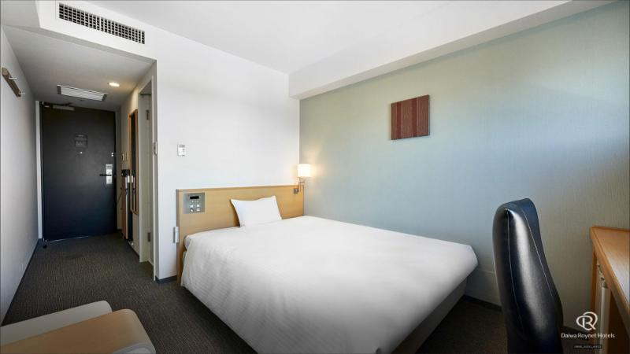

หมวดหมู่ข้อมูลการท่องเที่ยว
รวบรวมข้อมูลสถานที่ท่องเที่ยว ร้านอาหาร ที่พัก และการเดินทางแยกตาม 5 หมวดหมู่หลัก

Science
รวมศูนย์อวกาศ JAXA, Tsukuba Botanical Garden (สวนพฤกษศาสตร์), Tsukuba Expo Center, Geological Museum, Science Square และ NARO Food Research
เข้าชมหมวด Science
Nature
รวมสถานที่ท่องเที่ยวธรรมชาติสวยงาม เขาทซึคุบะ (Mount Tsukuba), Cable Car & Ropeway, ศาลเจ้าสึคุบะซัน, Tsukuba Center Building และสวนโดโฮ
เข้าชมหมวด Nature
Food
รวมที่กินยอดฮิต ร้าน Ramen Tatsuro (Miso Jiro), สเต๊กเนื้อวัวฮิตาจิ, โซบะทำมือ, Kawarakeya Strawberry Farm บุฟเฟต์สตรอเบอร์รี่สด และเวิร์กชอปทำอาหาร
เข้าชมหมวด Food
Hotel
รวมที่พักทั้งหมดในทซึคุบะ โรงแรมติดสถานี Daiwa Roynet, Hotel Nikko, เรียวกังออนเซ็น Tsukubasan Edoya และตารางเปรียบเทียบที่พักสำหรับครอบครัว
เข้าชมหมวด HotelMap
แผนที่แบบโต้ตอบ (OpenStreetMap Leaflet.js) ปักหมุด GPS 20 จุดสำคัญ พร้อมคู่มือการเดินทาง รถไฟ Tsukuba Express (TX), ตารางบัส Tsukbus และตั๋วพิเศษ Pass
เปิดแผนที่ & การเดินทางแผนเดินทางรายวัน (4-Day Strategy Itinerary)
สรุปตารางการท่องเที่ยว 4 วัน 3 คืน เจาะลึกเวลาเดินทางและสถานที่สำคัญ
เดินทางจากโตเกียว & ตะลุย JAXA Space Center
นั่ง Tsukuba Express (TX) Rapid 45 นาทีลง Tsukuba Station เช็กอินกระเป๋าที่ Daiwa Roynet Hotel จากนั้นนั่งบัสไป JAXA Tsukuba Space Center ชมจรวด H-II และกลับมามื้อค่ำที่ร้านราเมนยักษ์ Ramen Tatsuro
ท่องเขาสึคุบะ (Mount Tsukuba Special Guide)
ใช้ตั๋ว Tsukubasan Story Ticket นั่งบัสไปศาลเจ้า Tsukubasan Shrine ขึ้น Cable Car ชมยอดเขานันไท ทานซุปโซบะร้อนและกาแฟ 877Stand ต่อด้วย Ropeway ลงมาแช่ออนเซ็นธรรมชาติที่ Tsukubasan Edoya Ryokan
สตรอเบอร์รี่สด & Tsukuba Botanical Garden
นั่ง Tsukbus สาย Nambu Shuttle ไป Kawarakeya Strawberry Farm บุฟเฟต์เก็บสตรอเบอร์รี่สดและให้อาหารน้องแพะ จากนั้นช่วงบ่ายเดินชมเรือนกระจกที่ Tsukuba Botanical Garden และพักผ่อนสวนโดโฮ
Tsukuba Expo Center & เดินทางกลับ
ชมท้องฟ้าจำลองและนิทรรศการหุ่นยนต์ที่ Tsukuba Expo Center (เดิน 5 นาทีจากสถานี) ทานมื้อเที่ยงสเต๊กเนื้อวัวฮิตาจิที่ศูนย์การค้า BiVi ก่อนเดินทางกลับโตเกียวโดย Tsukuba Express